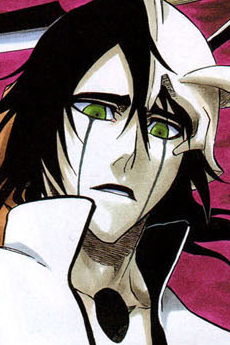

Ichigo Kurosaki was just a normal teenage boy: went to school, had friends, beat kids up, the usual. However, he always had 'visions' of monsters, later to be known as hollows. But they weren't just visions, they were real. And one day, a hollow attacked Ichigo and that was when he met the Soul Reaper, Rukia. This woman was injured and transferred her powers to Ichigo, resulting in him being forced to take her place as a Substitute Soul Reaper.
A Soul Reaper's (or Shinigami's) job is to protect an area of regular humans from hollows. But Ichigo's unusually high Spiritual Pressure makes him a target of rogue Shinigami.
The difference in ability, what about it? Do you think I should give up just because you're stronger than me? -Ichigo Kurosaki, in the midst of battle against Aizen Sosuke
Ichigo is a hard-headed kid. If he doesn't initially get his way, he will FIND a way to get it.
With one of the greatest antagonists of all time, Aizen Sosuke, Bleach is definitely up there in terms of fights and peaks. Aizen toys with Ichigo and manipulates everyone to do his bidding. For example, Aizen had known about Ichigo's existence since he was born, and spent 15 years creating a plan and executing it. Everything that has happened in Ichigo's life from quite literally his birth was planned by Aizen. Rukia being injured was no mistake, it was Aizen's doing, and he knew that her powers would then be transferred to Ichigo, which would cause a chain of events to occur with Ichigo eventually becoming stronger.
Aside from Aizen, Bleach is very well known for its fights and philosophies. Take Ichigo vs. Ulquiorra for example. They were evenly matched in strength for majority of the battle (until Ichigo's hollow form took over). Throughout the fight, Ichigo and Ulquiorra argue about their beliefs in humanity. Although Ichigo has a generic "protect my friends" and "put your heart and soul into it" attitude, Ulquiorra takes a nihilistic stance. He speaks about how all humans are trash and although he became intrigued by them throughout the fight, he still could never understand what it meant to have "heart". His demonic nature is reflected in his final form "Murcielago" which means "bat" in Spanish. His personality is established as dark, depressing, and dreary. His characterization is refreshing considering the what is seen nowadays in TV shows. 
The heart, you say? You humans are always so quick to speak so lightly of such things... as though you carry your heart in the palm of your hand. However, this eye of mine perceives all; there is nothing it overlooks. If this eye cannot see something, then that 'something' does not exist. This is how i have always lived. So tell me... what is this 'heart' of which you so casually speak? If i tore a hole in your chest... would i see it there? If i cracked open your skull... would i find it there? -Ulquiorra, in response to a speech given by Ichigo
Bleach doesn't seem like that title that would WOW a reader, but the presence of certain characters combined with plot twists such as Ichigo's entire life being a lie make this story one of the greats. An 8/10 is given because although done fantastically, there are still other manga that have done it better. Still a must-read though!